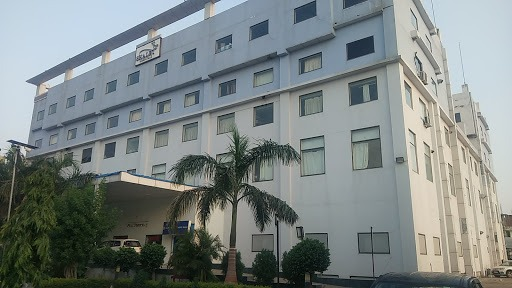

Jabalpur Hospital & Research Center
 client one
client one
Jabalpur Hospital And Research Centre is 250 bedded multi specialty hospital renowned for its medical expertise, excellent nursing care, and quality diagnostics. The specialists on the hospitals’ panel include some of the most distinguished names in Medical Profession. We bring together a dedicated team of physicians, nurses and other healthcare professionals to provide the highest standards of medical treatment. We are lucky to have a stability of the team of Doctors from past 25 years apart from new talents.
contact us-
0761-4026000Address-
Russel Chowk, JabalpurNSCB Hospital
 client two
client two
Netaji Subhash Chandra Bose Medical College (NSCB Medical College)is the second oldest medical college in the state of Madhya Pradesh, India. It was founded in 1955 as Government Medical College Jabalpur and was inaugurated by then Prime Minister, Honorable Late Shri Jawahar Lal Nehru. Later it got named after Netaji Subhash Chandra Bose, the most prominent leader of the Indian independence movement. Admission is through a National Eligibility Cum Entrance Test and the current class size is 150 students per year which is to be commisioned to 250 soon.
contact us-
076123 70951Address-
Tilwara Rd, Doctors Colony, Medical College Colony, Jabalpur, Madhya Pradesh 482003Shalby Hospital
 client three